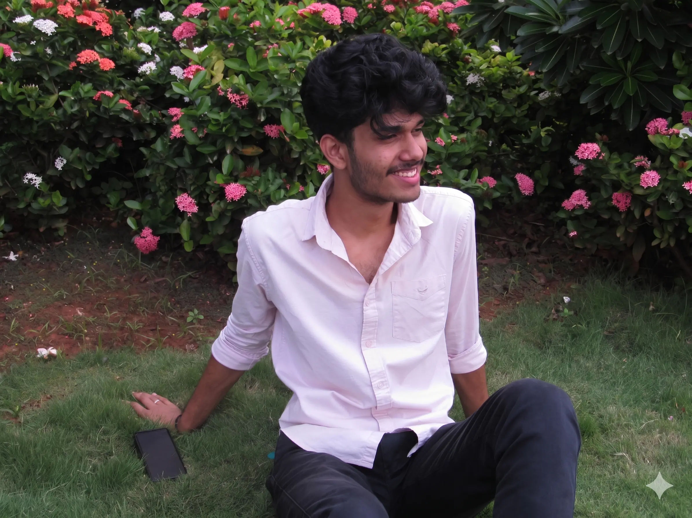

Available for Internships
Final-year Electronics and Communications Engineering student at VIT-AP. I build firmware, Linux drivers, and hardware accelerators. Most problems get interesting when you stop trusting the abstraction.

It started with a Bluetooth robotic arm at 13. I didn't have a datasheet. I didn't know datasheets existed. All I knew was I wanted to understand why it worked.
That question "why?" never left. It kept following me through every project. And every time I thought I had the answer, I'd realize there was another layer worth understanding.
Now I enjoy working at the hardware-software boundary. I'm drawn to problems that reward understanding the system beneath the abstraction, whether that means debugging, designing, or building from the ground up.
Outside of that I play a lot of chess, occasionally basketball, and spend more time than I should listening to a song on repeat until I've figured out exactly what the lyrics are doing.
Hardware, firmware, and ML. Usually all three at once.
A chip with two processors inside needs both of them talking to each other reliably. This project brings up both cores on an STM32MP157 from scratch, runs a real-time control loop on one and Linux on the other, and studies exactly how fast they can pass messages and what slows that down. The goal is a published paper with concrete design rules.
Running a neural network on a chip that has both a processor and programmable logic on it. The processor handles setup and results; the programmable logic does the heavy math in parallel. I wrote the hardware description for the convolution layer myself and optimised it until it ran 2.67x faster than doing the same thing purely in software, while using a fifth of the chip resources.
Triggered by the Tirupati laddu adulteration controversy: could a small device tell the difference between pure and adulterated ghee by smell alone, with no lab equipment? Built a sensor array that reads the chemical signature of heated ghee, trained a tiny classifier that fits on a microcontroller, and got to 86.6% accuracy running entirely on-device.
A drone you control over a cable, for situations where radio links are unreliable or battery life matters more than freedom of movement. I replaced the standard remote control radio with a custom communication stack, built a flight dashboard with live telemetry, and added a circuit to switch between tether power and battery mid-flight. It flew.
VIT-AP's humanoid robot. It could hold a conversation, recognise faces and remember who it had met before, and respond with physical gestures. Demonstrated to the HRD Minister of Andhra Pradesh at two public events. What it really taught me was how differently a system behaves when the person in front of it isn't debugging it.
Experiments, side projects, half-finished ideas, and things that didn't make this list. The interesting stuff usually lives here first.
Bluetooth-controlled robotic arm, before I owned a multimeter or knew what a datasheet was. The start of everything.
Led my school team to the finals of the pan-Asia Young Innovators Program (YIP 2019). First time competing at that scale.
Designed and shipped a personal site with an interactive chatbot. First real full-stack project, and the reason this one exists.
National Hackathon 2024 (VIT-AP) and TinkerQuest '24 (IIT Roorkee × Redcliffe Labs), among others. Rapid iteration under pressure turned out to be a useful skill.
Government innovation grant for CogniLift, a neurofeedback-based brain activity monitoring and therapy device. First time building something at the brain-computer interface, and the first time someone external put money behind the direction.